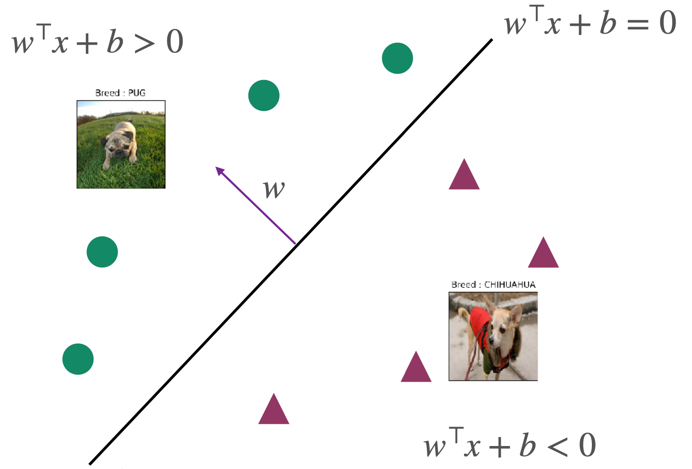
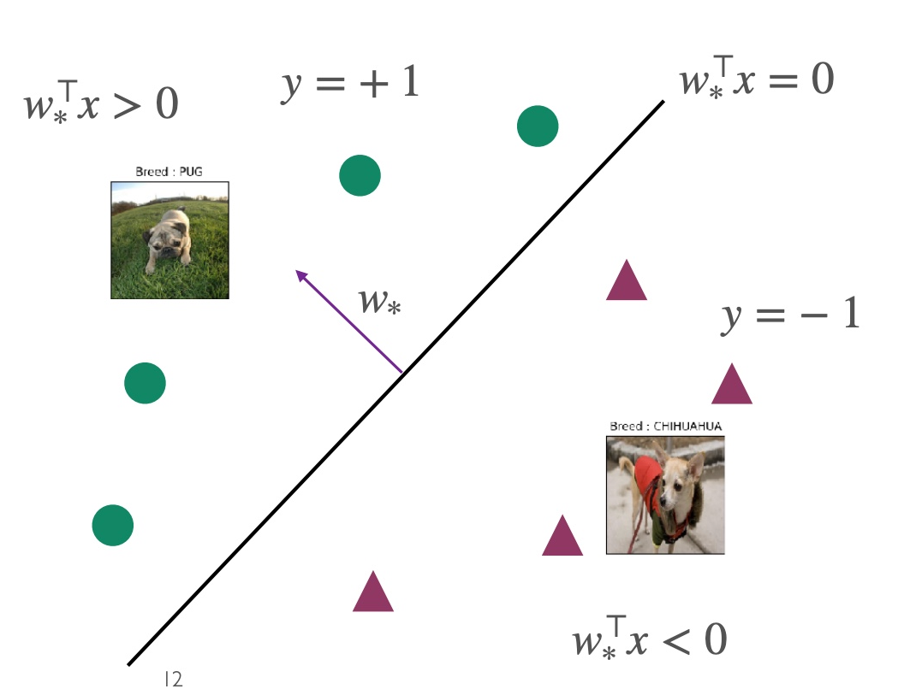
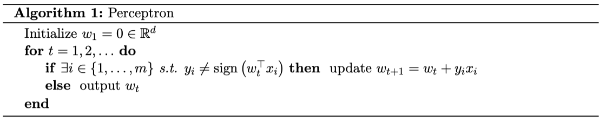
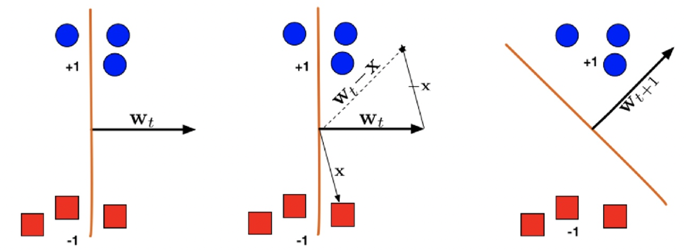
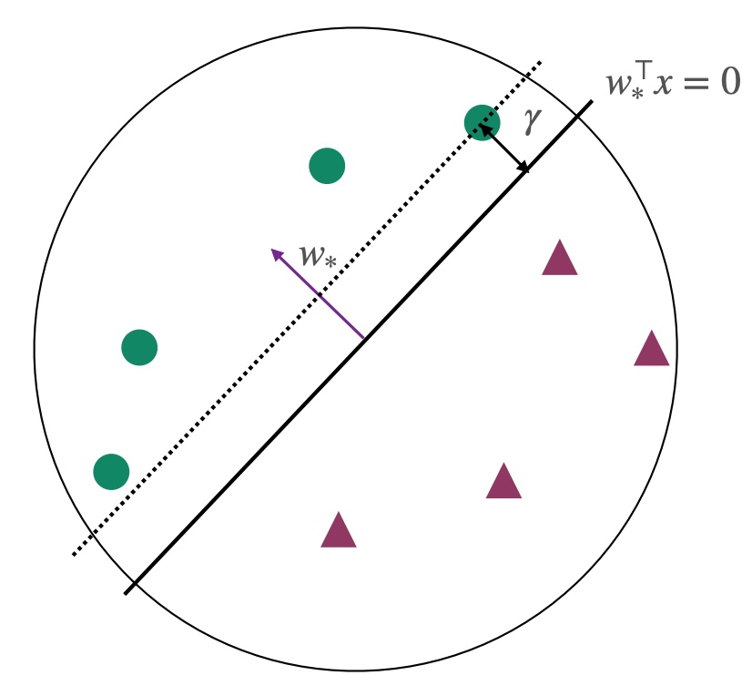

Binary Classification
Assumptions
- Linearly separable data.
- Binary classification, meaning the data can be divided into two classes.
Objective
To categorize the data into two classes based on labels.
Set up
Input space
X=Rd
Label space / Output space
Y={−1,1}
Classifier | Hypothesis class F
F:={x↦sign(w⊤x+b) ∣ w∈Rd,b∈R}
Where ω is the weight vector; b is the bias, and sign is the sign function defined as:
sign(a)={1−1if a≥0otherwise


To simplify subsequent calculations, we aim to have the classifier containing only w without b. For this purpose, we add a dimension and treat b in the second dimension of w as a constant, as follows:
x↦[x1]w↦[wb]
The original classifier simplifies to
F:={x↦sign(w⊤x) }
Empirical Risk Minimizer
We use the following loss function to find ERM:
ℓ(f(x),y)={01if f(x)=yotherwise
This expression is also known as 0-1 loss, where 1 represents prediction error, and 0 represents correct prediction. This expression can also be represented using the indicator function I (Indicator function) as:
I[f(x)=y]={10if f(x)=yif f(x)=y
By substituting the classifier into the loss function, we can derive ERM as follows:
wminerr^(w)=wminm1i=1∑mI[sign(w⊤xi)=yi]=wminm1i=1∑mI[sign(yiw⊤xi<0)]
The w that minimizes ERM is denoted as w^:
w^=argwminm1i=1∑mI[sign(w⊤xi)=yi]=argwminm1i=1∑mI[sign(yiw⊤xi<0)]
In the case of linearly separable data, w^ is referred to as w∗. At this point, w∗ satisfies yi=sign(ω∗⊤xi) for any point, and ω∗⊤xi serves as the boundary between the two categories.
Perceptron Algorithm
Objective
Update w until all data points are correctly classified.
Applicability
- Data points must be completely linearly separable.
- Once data like XOR or non-linearly separable data occurs, the perceptron cannot be used.
- XOR and non-linearly separable data can be segmented using kernel SVM.
Algorithm

Update Rule
If misclassified, i.e., sign(w⊤xi)=yi or sign(yiw⊤xi<0), update according to rule wt+1=wt+yixi.
If yi=1, then wt+1⊤xi=wt⊤xi+∥xi∥2>wt⊤xi. w updates towards the positive direction.
If yi=−1, then wt+1⊤xi=wt⊤xi−∥xi∥2<wt⊤xi. w updates towards the negative direction.

Margin γ and Convergence of the Algorithm
Assumptions: All points lie within the unit circle ∣∣xi∣∣2≤1, and at this point ∣∣ω∗∣∣=1.
Conclusion: The Perceptron algorithm converges in at most 1/γ2 rounds, returning a classifier where sign(ωTxi)=yi. At this stage, all points are correctly classified.
Proof: Refer to https://machine-learning-upenn.github.io/assets/notes/Lec2.pdf
Margin γ: Represents the minimum distance of all points to the hyperplane.
γ=i∈[m]min∥w∥∣w∗⊤xi∣=i∈[m]min∣w∗⊤xi∣

References:
https://www.cs.cornell.edu/courses/cs4780/2022sp/notes/LectureNotes06.html
https://machine-learning-upenn.github.io/calendar/
Declaration: The content of this blog is class notes and is for sharing purposes only. Some images and content are sourced from textbooks, lecture materials, and the internet. If there is any infringement, please contact aursus.blog@gmail.com for removal.